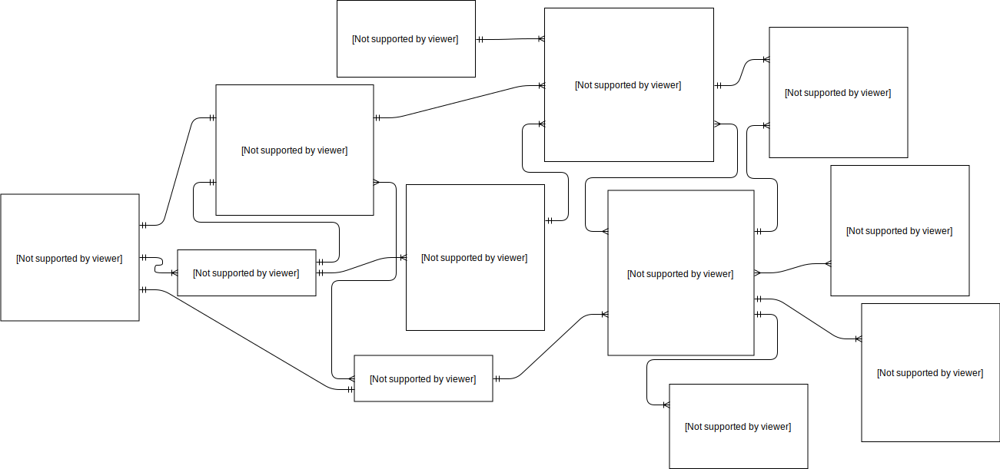

App Screenshot Compare tool (with AWS Device Farm)
This project is a work in progress.
The Problem
Developers (Blustream) do not have an efficient way to ensure proper scaling and responsiveness of the mobile applications they are developing on varying screen sizes. They need a program to crawl the mobile applications, save screenshots, then compare them to screenshots from a specified version of the app. Afterward a Report is to be generated containing a difference summary for faster UI fixes to take place. This will also be used for regression and ad-hoc test purposes.
| Type | Requirement |
|---|---|
| OS Support | Android & iOS |
| Possible App Flavor Count | ∞ |
| Scheduled Runs | Yes |
| On-Demand Runs | Yes |
| Persist screenshots for future use | Yes |
| Guaranteed Similar Element Ids | No |
Solution
I decided to use Appium, which runs on selenium, to run a JUnit test that would crawl the app, and assert whether the appropriate number of screenshots were captured. This is not exactly the proper way to use JUnit, but we are not testing functionality, we are determining when a difference occured in the UI of an app.
I am using AWS Device Farm to run the software on real devices we desire (not emulators). The screenshots are easily maintained by Device Farm and can be accessed through the CLI or Java SDK
A Spring-Boot web application will serve well for viewing the screenshots, determining differences through a screenshot comparison library that will be visually reported to developers.
Ideally these reports would be stored for future use so the server does not need to be completing redundant tasks. To achieve this, a JSON report will be generated and stored in an AWS S3 bucket. The screenshots that are found to be different will also be stored for faster access in the future.
Screenshot-Tool
Device Farm provides 'desired capabilites' that I access within the program (platform, OS version, etc). This makes it very easy for me to be able to scale the program. I am able to dynamically determine what platform is being run. More importantly, I know which application is to be crawled and documented without needing to change any code. Since our apps do not necessarily share the same element ids, I made a library of like ids and would only search on a per-case basis when needed. By default elements are looked up in the common-element library I created. This is also true for functionality differences. I broke up each application into 'Chunks'. I could then write step definitions for the program to crawl through. Ideally there would only be one definition for all apps per chunk. In the worst case I would have `n` number of step definitions though it is unlikely to occur, in my case.

Comparison-Tool
We required a system that can compare two screenshots but ignore specific areas of the app that are meant to change dynamically or on each app version. To do this I implemented a way to capture and use "masked images". Essentially, by crawling the app in a mode that marked areas that are meant to be 'masked' the screenshot tool is able to analize that imge and create an image mask to ignore ares in a comparison run. Alternatively in the comparison library I wrote there is a way to "create masked images". This is done by comparing two images and marking the area that is incorrect - just like a regular comparison, but the results are named differently to be used again later.
This code is available here.
REST API
The REST Server, documented using swagger and available here, was created so that the devlopers had an easy way to control events as well as GET status updates and the information needed to understand results. This system allows the developer to upload our `.apk`/`.ipa` files for storing to be used with AWS Device Farm to get screenshots on hundreds of different phones, should we desire. Starting screenshot jobs, comparison jobs, or looking up information about a device has never been easier.

The postgreSQL database I designed, with the guidance of my superiors, to support this project will help describe what it is that we are doing here. We need to track everything from screenshot, to device, to an app version, screenshot version, down to the user on the application. This is the beginnning of a more complicated and useful QA tool to support a growing start-up.

Web-Server
Running on the Spring Framework, the web server hosts the frontend static html files and resources needed for developer's ease of use. The REST API can easily be used just as well but does not provide the visual elements that make it easier to understand what is occuring.